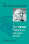
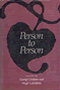

|
Insane
Therapy
Portrait of a Psychotherapy Cult
Ayella, Marybeth F. 213 pp • 6x9 •
Spring 1998
paper 978-1-56639-601-1
cloth 978-1-56639-600-4
|
 |
Psychiatry and Behavioral Science
An Introduction and Study Guide for Medical Students
edited by Baron, MSEd, DO, David and Ellen Sholevar, MD
320 pp • 7x10 • Spring 2008
paper 978-1-59213-531-8
|
|
Aggression
Its Causes, Consequences, and Control
Berkowitz, Leonard 496 pp • 6.4x9.3 •
Spring 1993
cloth 978-1-56639-033-0<
|

|
Closure
The Rush to End Grief and What It Costs Us
Berns, Nancy
228 pp • 6x9 • Fall 2011
paper 978-1-4399-0577-7
cloth 978-1-4399-0576-0
|
 |
Undaunted
Psychologist
edited by Brannigan, Gary G. and Matthew R. Merrens 320
pp • 6.5x9.25 • Fall 1992
cloth 978-1-56639-015-6 |

|
Paths
into American Culture
Burnham, John C. Fall 1987
cloth 978-0-87722-505-8 |

|
Human
Attachment
Colin, Virginia L. 416 pp • 6.5x9.25
• Spring 1996
cloth 1-56639-459-7
EAN 978-1-56639-459-8 |
 |
Shades
of Black
Diversity in African American Identity
Cross, Jr., William E. 296 pp • Spring
1991
paper 978-0-87722-949-0
cloth 978-0-87722-759-5 |
|
The Teacher's Attention
Why Our Kids Must and Can Get Smaller Schools and Classes
Delavan, Garrett
244 pp • 6x9 • Spring 2009
paper 978-1-59213-894-4
cloth 978-1-59213-893-7
|
|
Women
with Disabilities
Essays in Psychology, Culture, and Politics
edited by Fine, Michelle and Adrienne Asch 347
pp • 6x9 • Fall 1987
paper 978-0-87722-669-7
cloth 978-0-87722-474-7
|
|  |
The
Skeptical Visionary
A Seymour Sarason Education Reader
edited by Fried, Robert L., Seymour Sarason 312
pp • 7x10 • Fall 2002
paper 978-1-56639-980-7
cloth 978-1-56639-979-1
|
|  |
Person
to Person
edited by Graham, George and Hugh LaFollette 336
pp • Fall 1988
cloth 978-0-87722-576-8 |
 |
Elements of Discipline
Nine Principles for Teachers and Parents
Greenspan, Stephen, foreword by Arnold Sameroff
212 pp • 6x9 • Fall 2012
paper 978-1-4399-0897-6
cloth 978-1-4399-0896-9
|
 |
Food
and Evolution
Toward a Theory of Human Food Habits
edited by Harris, Marvin and Eric B. Ross 640
pp • Spring 1987
paper 978-0-87722-668-0
cloth 978-0-87722-435-8 |
 |
The
Psychodynamics of Organizations
edited by Hirschhorn, Larry and Carole K. Barnett 288
pp • 6x9 • Spring 1993
paper 978-1-56639-021-7
cloth 978-1-56639-020-0 |
|
History
of Psychology
Hothersall, David Spring 1984
cloth 978-0-87722-354-2 |
|
Women
Living with Self-Injury
Hyman, Jane Wegscheider 248 pp • 6x9
• Fall 1999
paper 978-1-56639-721-6
cloth 978-1-56639-720-9
|
 |
Messages from Home
The Parent-Child Home Program for Overcoming Educational Disadvantage
Levenstein, Phyllis and Susan Levenstein
Revised and Updated Edition
288 pp • 6x9 • Spring 2008
paper 978-1-59213-677-3
cloth 978-1-59123-676-6
|
 |
Myths
about the Powerless
Contesting Social Inequalities
edited by Lykes, M. Brinton, Ali Banuazizi, Ramsay Liem and Michael
Morris, foreword by George W. Albee 416 pp
• 6x9 • Spring 1996
paper 978-1-56639-422-2
cloth 978-1-56639-421-5
|
 |
The
Memory Bird
Survivors of Sexual Abuse
edited by Malone, Caroline, Linda Farthing and Lorraine Marce
295 pp • 5.5x8.25 • Spring 1997
paper 978-1-56639-526-7
cloth 978-1-56639-525-0
|

|
Bullying
The Social Destruction of Self
Martocci, Laura
220 pp • 6x9 • Fall 2014
paper 978-1-43991-073-3
cloth 978-1-43991-072-6
|
 |
Crime
and Family
Selected Essays of Joan McCord
McCord, Joan, introduction by David Farrington, foreword by
Geoffrey Sayre-McCord
320 pp • 6x9 • Fall 2006
paper 978-1-59213-558-5
cloth 978-1-59213-557-8
|
|
Shaming the Constitution
The Detrimental Results of Sexual Violent Predator Legislation
Perlin, Michael L. and Heather Ellis Cucolo
324 pp • 6x9 • Spring 2017
paper 978-1-4399-1292-8
cloth 978-1-4399-1291-1
|

|
Psychology
of Judgment and Decision Making
Plous, Scott Spring 1993
cloth 0-87722-913-9
EAN 978-0-87722-913-1 |
 |
Love's
Revolution
Interracial Marriage
Root, Maria P. P. 240 pp • 6x9 •
Fall 2000
paper 978-1-56639-826-8
cloth 978-1-56639-825-1
|
 |
Help
Your Marriage Survive the Death of a Child
Rosenblatt, Paul C. 200 pp • 5.5x8.25
• Fall 2000
paper 978-1-56639-805-3
cloth 978-1-56639-804-6
|
 |
The
Person and the Situation
Essential Contributions of Social Psychology
Ross, Lee and Richard E. Nisbett 1992 pp •
Spring 1991
cloth 978-0-87722-851-6 |
 |
Sisters
on Screen
Siblings in Contemporary Cinema
Rueschmann, Eva 304 pp • 6x9 • Fall
1999
paper 978-1-56639-747-6
cloth 978-1-56639-746-9
|
 |
Starting
Out
Class and Community in the Lives of Working-Class Youth
Steinitz, Victoria Anne and Ellen Rachel Solomon 248
pp • Fall 1986
paper 978-0-87722-620-8
cloth 978-0-87722-430-3
|
 |
Before
Their Time
Adult Children's Experiences of Parental Suicide
edited by Stimming, Mary and Maureen Stimming 240
pp • 5.5x8.25 • Fall 1998
paper 978-1-56639-655-4
cloth 978-1-56639-654-7
|
|
The
Sense of Self
A Guide to How We Mature
Stringer, Lorene A. 170 pp • Spring 1971
cloth 978-0-87722-008-4 |
 |
In
the Shadow of War
Memories of a Soldier and Therapist
Student, Menachem,
foreword by Terry A. Kupers
192
pp • Spring 1991
cloth 978-0-87722-789-2 |
|
Hung
Jury
The Diary of a Menendez Juror
20 Years Later
Thornton, Hazel 206 pp • 5.5x8.25
• Spring 2017
paper 978-1-4399-1513-4
|
 |
Women
and Gender
A Feminist Psychology
Unger, Rhoda and Mary Crawford 549 pp •
Fall 1991
cloth 978-0-87722-897-4 |
 |
Promising
Vitek, William 288 pp • 5.5x8.25 •
Fall 1993
cloth 978-1-56639-052-1 |
 |
Of
Others Inside
Insanity, Addiction, and Belonging in America
Weinberg, Darin, foreword by Bryan S. Turner 248
pp • 6x9 • Fall 2005
paper 978-1-59213-404-5
cloth 978-1-59213-403-8
|
 |
Inner Speech and the Dialogical Self
Wiley, Norbert
218 pp • 6x9 • Spring 2016
paper 978-1-4399-1328-4
cloth 978-1-4399-1327-7
|
 |
Psychology
of Attitude Change and Social Influence
Zimbardo, Philip G. and Michael R. Leippe 400
pp • Spring 1991
cloth 978-0-87722-852-3 |